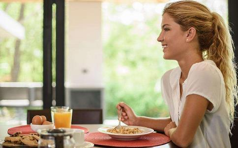

“癌”字中有三个“口”，可见饮食和癌症的关系有多密切。世界癌症研究基金会曾明确指出，每年因癌症死亡的人中有1/3和不良饮食习惯有关，30多种癌症由此而来。
解放军总医院研究员、卫生部
“平衡膳食是防癌饮食的基础。”北京军区总医院高级营养师荀晓霖表示，虽然
在这个基础上，还要尽量保证饮食多样化，最简单的方法是数颜色，一天吃够5种至7种颜色的食物最好。以
常见的抗癌食物有一百多种，主要分为四大类。“适当多吃抗癌食物可以锦上添花。”中国疾病预防控制中心营养与食品安全所副所长马冠生告诉记者。
新鲜果蔬。其中所含的抗氧化剂、类
豆制品。
菌类。约96%的菌类都有抗癌效果，如冬菇、
绿茶。绿茶中富含茶多酚，可与致癌物结合，使其分解，抑制癌细胞的生长。养成每天喝2~3杯绿茶的习惯，可以预防胃癌、肝癌和肺癌，但必须注意，茶水不要太浓。
了解选择食材的原则后，学会科学的烹调方式对饮食防癌来说同样重要。荀晓霖指出，即使是好的食物，经过不合理的烹调方式，也会产生很多化学致癌物，所以最好掌握“三减”原则。
减农残。化肥、农药等残留化学物质和癌症关系密切。除了督促相关部门加大监管力度外，在日常生活中，老百姓也可以采取一些措施，降低农残伤害。中国农业大学食品科学与营养工程学院教授姜微波建议，
减煎炸。荀晓霖表示，煎炸过程中，稍不注意，油温过高，就会产生大量苯并芘、丙烯酰胺等致癌物，反复煎炸的油里，致癌物更多。研究表明，常吃煎炸食物的人，更容易患上肺癌、肠癌等。另外，烧烤、腌制等烹调方式会形成很多致癌物。相比之下，蒸、煮、炖更为健康、低碳。如果实在禁不住烧烤美食的诱惑，可以在饭后吃一个猕猴桃，降低伤害。
减盐。盐和癌症也有“亲戚”关系。中山大学附属第一医院普通外科主任医师石汉平指出，亚洲国家中，韩国人最爱吃咸，同时，胃癌发病率很高。日本、中国紧随其后，胃癌发病率也不低。因此，饮食上最好清淡。除了每天每人吃盐最好别超5克外，烹调时还要注意“隐性盐”的存在，味精、酱油、酱料、调味包中也含有盐。
想要防癌，最后吃的环节还要遵循一个原则——“慢”。专家指出，慢慢吃对防癌有三大好处。
细嚼慢咽减少致癌物质。中国中医科学院教授杨力表示，人的唾液中含有过氧化物酶、过氧化氢酶和维生素C，不仅有抗氧化作用，还能分解进入口腔的致癌物质，有效降低癌症的发病率。
美国研究证实，当亚硝酸类化合物、黄曲霉素等强致癌物遇到唾液时，细胞变异原性会在30秒内完全丧失。从这个角度讲，用餐节奏不宜太快，细嚼慢咽有助于唾液发挥抗癌功效，一口食物咀嚼30下再咽下去最好。
杜绝高温预防食道癌。荀晓霖指出，吃饭太急、太快的人容易吃得过烫，久而久之，高温饮食的刺激会使口腔黏膜、食道、胃黏膜频繁破损，甚至发生溃烂、出血，从而诱发癌症。数据显示，食道癌患者中，平时喜好热食、热饮者占到90%以上。因此，吃饭一定要慢下来，等食物凉一些，最好到40摄氏度左右时再吃。
控制食量还能防癌。“只有慢慢吃，才能感受到饥饿感的消退和胃里逐渐充实的感觉，然后适时放下筷子，保证七分饱的状态。”中国农业大学食品科学与营养工程学院副教授范志红表示，如果见到美食就是一顿狼吞虎咽，往往容易吃得过多，给胃肠带来巨大的消化压力。
日本研究显示，总是吃得太饱，会降低抑制细胞癌化因子的活动能力，增加患癌风险。因此，吃饭时坚持“慢”的原则对防癌大有裨益。